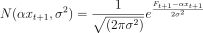

Pseudo-marginal Metropolis Hastings
The pseudo-marginal approach is used to perform inference on Hidden Markov Models, where the hidden states do not allow a straight-forward and feasible computation of the log likelihood during a MH step. As we are not interested in the values of the hidden state variables X1:n, an unbiased estimate for the marginal likelihood P(F1:n | θ) is obtained using an approach called the bootstrap particle filter (Wilkinson, 2011).
MH is performed as normal and the bootstrap particle filter is applied when computing the log posterior for a new parameter proposal θ. The computation of the log posterior requires computing the likelihood P(F1:n | θ). The likelihood is the probability of obtaining the observed fluorescence reads F1:n, given a fixed theta θ, P(F1:n | θ):
P(F1:n | θ) = ∑ X1:n P(F1:n | θ, X1:n ) P(X1:n | θ)
The summation (marginalisation) over all possible values X1:n is not computationally feasible. Instead of summing over all the possible values of the amplification curve X1:n, we obtain an unbiased estimate using a limited number of simulations of the amplification curve, called a particle cloud. The method is called pseudo-marginal as it 'marginalises' over a subset of the possible values of X1:n. As the number of particles approaches infinity, the approximation would approach the real likelihood. In practice, an order of 100 particles are used.
The bootstrap particle algorithm was adapted from the work of Wilkinson, 2011, which describes the steps as follows:
- For t = 0, initialise the procedure with a sample x0k = X0, where X0 is the part of the proposal θ, and k = 1, ..., M. Assign uniform normalised weights w'0k.
- At time t, the weighed sample is (xtk, w'tk | k = 1, ..., M) representing draws from P(xt | F1:t).
- Use discrete sampling based on weights w'tk to resample with replacement M times and obtain x*tk.
- Propagate each particle forward x*tk according to the transition probability of the Markov process P(xt+1 | xt, θ).
In our case, a particle xtk is propagated forward by sampling from a binomial distribution Δk ~ Binom(xtk, r) and setting xt+1k = xtk + Δk. The parameter r in the binomial distribution is the efficiency parameter from the current proposal θ = [X0 , r , σ2].
-
For each particle, compute a weight wt+1k = P(Ft+1 | xt+1k), according to the observation probability of the current state in the Hidden Markov Model. Each weight is normalised to get w't+1k = wt+1k / ∑iwt+1i.
In our case, the observation probability P(Ft+1 | xt+1k) is the Gaussian noise in the observation of fluorescence Ft+1, when the number of molecules xt+1k is constant:

where σ2 is the variance parameter from the current proposal θ = [ X0 , r , σ2 ], and α is the fluorescence coefficient assumed known and fixed throughout inference.
The new weights represent samples from P(xt+1 | F1:t+1)
- Return to step 2 and repeat for the next time step t+1.
 Figure 21. Diagram showing the bootstrap particle filter approach for computing the log-posterior during a MH step. At each step t, the particles xtk are resampled according to the weights wtk. Then, each particle is propagated forward according to the transition probability of the HMM (binomial branching process). Finally, new weights are computed according to the observation probability of the HMM (Gaussian observation noise).
Figure 21. Diagram showing the bootstrap particle filter approach for computing the log-posterior during a MH step. At each step t, the particles xtk are resampled according to the weights wtk. Then, each particle is propagated forward according to the transition probability of the HMM (binomial branching process). Finally, new weights are computed according to the observation probability of the HMM (Gaussian observation noise).
Behaviour for large initial copy numbers
It was mentioned in the section on estimating the fluorescence coefficient α that for large initial copy numbers, the amplification process behaves deterministically and the inference method does not work as expected. For this reason, sigmoid curve fitting was used to obtain α.
The PMMH algorithm cannot be used when the process behaves deterministically because the weights computed for each particle during the bootstrap particle filter function differ by a large amount. These weights are computed using the probability density function of the Gaussian noise, and the maximum weight at each step of the bootstrap particle filter is significantly larger than all the weight of all other particles. The discrete sampling used to resample the particles at each step will almost always choose that particle. This phenomenon causes only one particle to be resampled (that of maximal weight), causing the bootstrap particle filter to behave as if using only one particle (in other words, using simple Metropolis Hastings and running a single qPCR simulation when computing the log posterior of a proposal). This behaviour causes the chain to mix very slowly, making inference unuseable.